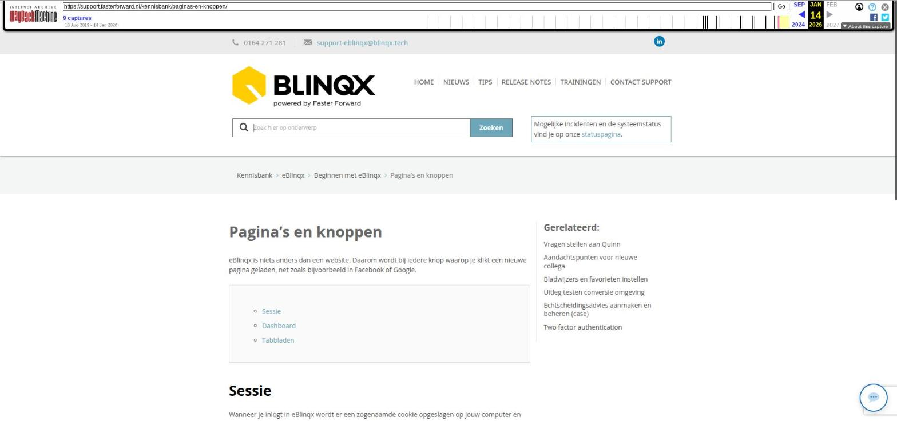

Pagina's en knoppen

Tekstinhoud
Pagina's en knoppen
eBlinqx is niets anders dan een website. Daarom wordt bij iedere knop waarop je klikt een nieuwe pagina geladen, net zoals bijvoorbeeld in Facebook of Google.
Sessie
Dashboard
Tabbladen
Sessie
Wanneer je inlogt in eBlinqx wordt er een zogenaamde cookie opgeslagen op jouw computer en op basis van die cookie een zogenaamde sessie gestart. In de cookie staat aangegeven wanneer je voor het laatst actief bent geweest in eBlinqx. Wanneer de laatste activiteit meer dan een uur geleden is, zal de sessie automatisch worden verbroken door jouw browser. Dit is gedaan om de veiligheid van jouw eBlinqx te waarborgen. Het aanmaken van een brief of een e-mail wordt niet meegerekend als activiteit, de pagina vernieuwt namelijk niet. Je kunt ook een autosave voor jouw e-mail instellen, zodat jouw e-mails tussentijds worden opgeslagen. Dit stel je in via 'Mijn instellingen'. Meer informatie hierover vind je hier.
Dashboard
Op het dashboard zijn diverse tegels en snelkoppelingen te vinden. Ook heb je bovenin diverse icoontjes vanuit waar je direct naar een module kunt toegaan. Hier lees je er meer over.
Tabbladen
Vrijwel iedere pagina in eBlinqx is opgebouwd uit tabbladen, met name de dossierpagina's. Aan de streep is te zien op welk tabblad je zich op dat moment bevindt.
Klik hier voor meer tips & trucs in eBlinqx.
Laatste update: 15 oktober 2025
Was deze informatie nuttig?
Ja Nee